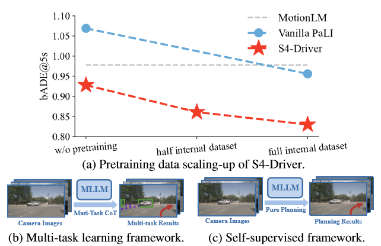
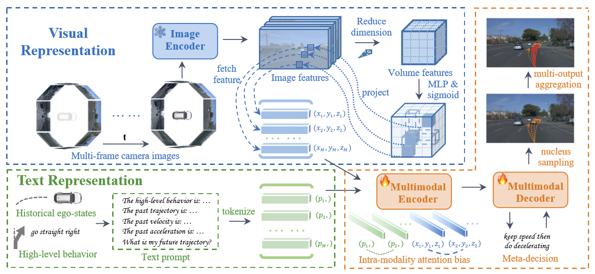
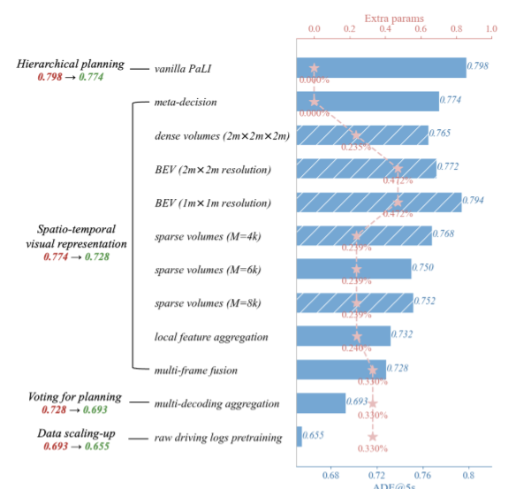
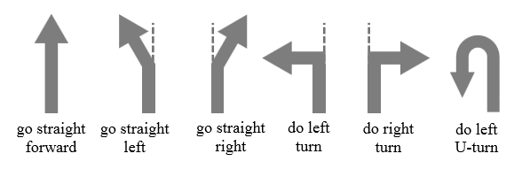
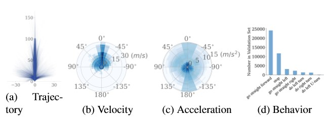
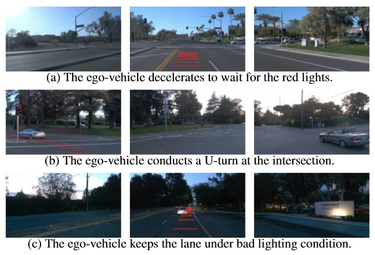
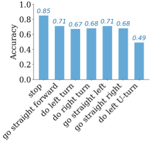
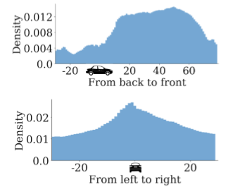
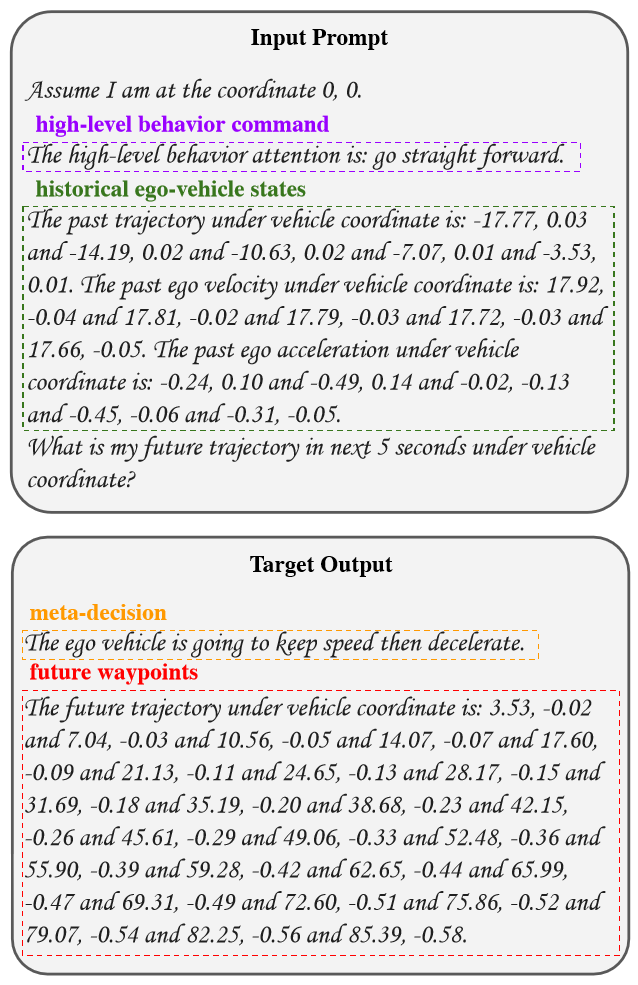
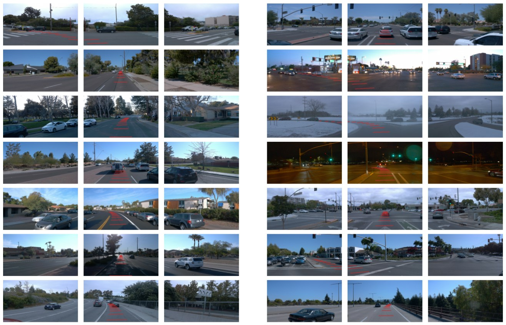

目次
S4-Driver: Scalable Self-Supervised Driving Multimodal Large Language Model with Spatio-Temporal Visual Representation
Yichen Xie1,†,*、Runsheng Xu2,*、Tong He2、Jyh-Jing Hwang2、Katie Luo3,†、Jingwei Ji2、Hubert Lin2、Letian Chen4,†、Yiren Lu2、Zhaoqi Leng2、Dragomir Anguelov2、Mingxing Tan2
1 UC Berkeley、2 Waymo LLC、3 Cornell University、4 Georgia Institute of Technology
arXiv:2505.24139v2 [cs.CV]、2025年6月3日
翻訳について：原文 PDF は
58_S4_Driver_2505.24139.pdf（全 15 ページ）。本文、図の説明、図中ラベル、表、脚注、付録を訳出し、論文タイトルと参考文献は原文のまま掲載。図は原図を掲載し、英語ラベルの日本語訳を併記した。数式・数値・引用番号・コードの識別子は原文を維持。原文の記述に関する補足は「訳注」と明示し、本文と区別している。
脚注：† Waymo でのインターン期間中に行った研究。* 同等の貢献。
要旨
マルチモーダル大規模言語モデル（MLLM）の最近の進歩により、自動運転におけるエンドツーエンドの運動計画手法への関心が強く再燃している。多くのエンドツーエンド手法は、中間的な知覚タスクと予測タスクを学習するために人手アノテーションに依存している。一方、人手アノテーションなしにセンサ入力から直接学習して計画軌跡を生成する純粋な自己教師あり手法は、最先端の性能に及ばないことが多い。我々は入力表現空間に重要なギャップがあることを見いだした。すなわち、MLLM 上に構築されたエンドツーエンド手法は、自動運転車が計画を行う本来の 3D 空間ではなく、2D 画像空間での推論タスクで事前学習されていることが多い。そこで我々は、広く用いられている PaLI［9］マルチモーダル大規模言語モデルに基づく、時空間視覚表現を備えたスケーラブルな自己教師あり運動計画アルゴリズム S4-Driver（scalable self-supervised motion planning algorithm with spatio-temporal visual representation）を提案する。S4-Driver は新しい疎なボリューム（sparse volume）戦略を用いて、視覚エンコーダをファインチューニングすることなく、MLLM の強力な視覚表現を透視ビューから 3D 空間へシームレスに変換する。この表現は多視点・多フレームの視覚入力を集約し、3D 空間における計画軌跡のより良い予測を可能にする。手法の有効性を検証するため、nuScenes と Waymo Open Motion Dataset（社内のカメラデータ付き）の両方で実験を行う。結果は、S4-Driver が人手アノテーションを一切必要としないにもかかわらず、既存の教師ありマルチタスク手法に対して有利な性能を示すことを示している。また、大量の未アノテーション走行ログで事前学習した場合に優れたスケーラビリティを示す。

図1：豊富なラベルなし走行ログによる S4-Driver のスケールアップ（1a）。MLLM の計画性能をマルチタスク学習と CoT 推論によって改善する過去の取り組み（1b）とは異なり、S4-Driver は人手アノテーションなしの自己教師あり運動計画（1c）に焦点を当てる。自己教師あり学習を用いた素の PaLI 手法も良好な性能を達成するが、時空間視覚表現を備えた完全な S4-Driver が最高の性能とスケーラビリティを達成する（1a）。
図中ラベル：(a) Pretraining data scaling-up of S4-Driver＝S4-Driver の事前学習データのスケールアップ、w/o pretraining＝事前学習なし、half internal dataset＝社内データセットの半分、full internal dataset＝社内データセット全体、Vanilla PaLI＝素の PaLI、(b) Multi-task learning framework＝マルチタスク学習の枠組み、Camera Images＝カメラ画像、Muti-Task CoT＝マルチタスク CoT、Multi-task Results＝マルチタスクの結果、(c) Self-supervised framework＝自己教師ありの枠組み、Pure Planning＝純粋な計画、Planning Results＝計画結果
1 はじめに
エンドツーエンド自動運転の探求は 1980 年代［43］にまでさかのぼる。そこでは運動計画モデルが生のセンサ入力に基づいて制御信号または将来のウェイポイントを直接予測していた。頑健性が限られていたため、これらの初期の試みは複雑な市街地の状況で苦戦した。近年のニューラルネットワークの能力の進歩により、この分野への関心が再燃しており［25,28,57］、特にマルチモーダル大規模言語モデル（MLLM）［10,42,51］の強力な汎化能力を踏まえるとその傾向が顕著である。
しかし、運動計画と MLLM の事前学習タスクの間には大きな違いがあるため、MLLM をエンドツーエンドの運動計画にそのまま適用しても、その強力な視覚理解・推論能力をほとんど活用できず、計画性能が劣る結果となる［53,61］。このギャップを縮めるため、図1b に示すように、従来手法はマルチタスク学習（多様な知覚タスクと予測タスクを学習と推論に組み込む）か、教師あり知覚事前学習（事前学習済みの自動運転知覚モデルを視覚トークナイザとして利用する）のいずれかに頼っている。しかし、きめ細かな人手アノテーションが両戦略のボトルネックとなっている。対照的に、純粋な自己教師あり手法は、センサ入力から直接学習でき、豊富なラベルなし走行ログを活用できるものの、最先端の性能に及ばないことが多い。
この現状に挑むため、我々は従来研究とは直交する形で自己教師あり運動計画の性能を高めることを目指す（図1c）。この方法では、自己教師ありのモデル学習に生のセンサデータと自車の軌跡のみを必要とし、高価な人手ラベルは不要である。まず、この方向性における主要な障害として次の 2 点を特定する。
- 最適でない表現形式。MLLM［9,10］は通常、2D 画像平面におけるタスク向けに設計されている。この画像空間の表現は、多視点画像の組み合わせからの 3D 推論能力を制限する。
- 限られたデータ規模。nuScenes［5］はエンドツーエンド計画のベンチマークとして最も広く採用されているものの一つであるが、含まれるシーケンスは 1k 未満であり、運転行動の多様性に欠ける。この限られた規模は、数十億パラメータ規模の MLLM のファインチューニングにおいて深刻な過学習の問題を引き起こす。
本論文では、MLLM の潜在能力をよりよく探求するために上記の課題に取り組む。第一に、時空間視覚表現を備えた、シンプルかつ効果的なスケーラブル自己教師あり運動計画手法 S4-Driver（Scalable Self-Supervised motion planning method with Spatio-temporal visual representation）を提案する。汎用のマルチモーダル大規模言語モデル［9,10］の上に構築し、カメラ画像から自車のウェイポイントを直接予測することで、中間的な知覚タスクと予測タスクを不要にし、それにより大量の未アノテーション走行ログを活用したモデル事前学習のスケールアップを容易にする（図1a）。最適でない視覚形式という障害に対処するため、多視点・多フレーム画像からの視覚情報の集約を可能にする新しい疎なボリューム表現を提案する。さらに、この時空間表現は透視ビューの視覚エンコーダから得た凍結された特徴で動作するよう設計されている。これにより運動計画におけるモデルの 3D 時空間推論能力が高まり、かつ MLLM の事前学習済み視覚埋め込みに含まれる世界知識がシームレスに保持される。第二に、十分な学習データで手法を厳密に評価するため、広く用いられている nuScenes データセット［5］に加えて、社内のカメラセンサデータを伴う大規模な WOMD-Planning-ADE ベンチマーク［18］も利用する。WOMD-Planning-ADE は nuScenes の約 100 倍の規模であり、スケーラブルな形でモデル性能を評価するためのより包括的なベンチマークとなる。
まとめると、我々の貢献は以下のとおりである。
- 自車軌跡による教師のみに依拠した、MLLM によるシンプルな自己教師ありエンドツーエンド運動計画を提唱する。この手法はシステム構成を単純化し、学習データのスケーリングを容易にする。
- 多視点・多フレームの視覚情報を効果的に集約し、運動計画のための MLLM の 3D 時空間推論能力を高める、新しい疎なボリューム表現を提案する。
- 提案アルゴリズムは nuScenes と WOMD-Planning-ADE の両ベンチマークで最先端の性能を達成する。また、事前学習による優れたスケーラビリティも示す。
2 関連研究
マルチモーダル大規模言語モデル（MLLM）。言語と画像の両モダリティを扱う MLLM は近年大きな注目を集めている［1,2,30,45,51］。先行研究は、強力な大規模言語モデル（LLM）［12,64,64］（訳注：原文では 64 が重複している）を、LLaVA［34］、PaLI［9,10］、PaliGemma［4］、InstructBLIP［14］のような高度な画像エンコーダ［19,45,63］と統合することに焦点を当ててきた。インストラクションチューニングやマルチモーダルファインチューニングを通じて、これらのモデルはマルチモーダルな理解と推論において優れた性能を示す。現在の開発は、複雑な知覚タスクや汎化タスクにおける能力をさらに高めるため、ますます大規模なマルチモーダルデータセットを活用している［3,42,59］。しかし、その強みにもかかわらず、これらのモデルは 3D 空間推論に限界を示しており［11,22,40］、自動運転への応用における課題となっている。
エンドツーエンド自動運転。自動運転の最終的な重要ステップは計画であるが、従来のシステムは多くの場合、知覚［33,35,60］と予測［41,54,65］のタスクのための複数のモジュールで組み立てられている。モジュール間の情報損失と誤差蓄積を緩和するため、エンドツーエンド運転システム［6,24,25,28,32,66］は統一されたモデルを用いて、生のセンサ入力から自車の将来のウェイポイントまたは制御信号を直接予測する。これらのシステムは計画を優先しつつも、通常は依然として知覚と予測を組み込んでおり、それぞれに明示的な教師を必要とする。一部の先行研究［13,46,58］は中間タスクを一切用いない純粋な運動計画を探求しているが、モデリング能力の制約により、複雑な市街地シナリオでは苦戦している。
運転のための MLLM。大規模モデルの優れた推論能力と汎化能力は、自動運転にとって望ましい特性である。一部の取り組みでは、運転シナリオを大規模言語モデルのテキストプロンプトに変換する［8,38,47］か、視覚言語モデルでカメラ画像を直接処理する［15,48,61］。しかし、その潜在能力は既存ベンチマーク［5］の規模の小ささによって制限されており、部分的なファインチューニング［23］しか行えない。一方、閉ループシミュレータ［16］はエンドツーエンドタスクのための現実的なセンサデータを提供することに苦労している。その結果、知覚モジュールと予測モジュールがもたらす追加のアノテーション要件があるにもかかわらず、推論を単純化するために、マルチタスクの同時ファインチューニング［49,53,61］や思考の連鎖（CoT）［56］による推論［37–39］が広く採用されている。別の方法として、一部の研究［15,52］は事前学習済みの知覚モデル［31］を統合して BEV 特徴を抽出し、それを視覚トークンとして言語モデルに送る。最近では、EMMA［26］が強力な Gemini［51］を自己教師あり運動計画に活用している。さらに彼らは、運動計画、3D 物体検出、道路グラフ推定を含む学習タスクの混合と、軌跡生成のための追加の推論過程を開発している。対照的に、我々の研究は追加の人手ラベルなしでの自己教師あり運動計画の強化に焦点を当てる。
3 運動計画のための MLLM の強化
本節では、事前学習済みの MLLM をエンドツーエンドの運動計画タスクに適応させる。一般性を失うことなく、PaLI［10］を利用する。ただし、これらの技術は他のより強力な MLLM とも互換性がある。MLLM の構成に対する一連の設計上の改良を導入し、それに応じて WOMD-Planning-ADE での性能が向上することを示す（図3）。
3.1 プランナとしての素の PaLI
エンドツーエンドの運動計画モデルは、多視点カメラ画像 \(\mathcal{C}\) と高レベル行動コマンド \(b\) に基づいて、自車の将来軌跡 \(\mathcal{O}_{T_f}\) を決定する。将来軌跡は、BEV 座標における将来の各時間ステップでの自車の位置からなる。すなわち \(\mathcal{O}_{T_f} = [(x_t, y_t)]_{t=1}^{T_f}\) である。高レベル行動コマンドは、ナビゲーションシステムと同様に、走行方向を導くために必要である。さらに、先行研究［32,62］で検証されているように、自車の過去の状態 \(\mathcal{H}_{T_h}\) も滑らかで実行可能な計画結果のために重要であり、ここでは過去の位置、速度、加速度を \(\mathcal{H}_{T_h} = [\mathbf{l}_t, \mathbf{v}_t, \mathbf{a}_t]_{t=-1}^{-T_h}\) として考慮する。すなわち、
\[ \mathcal{O}_{T_f} = P(\mathcal{C}, \mathcal{H}_{T_h}, b) \tag{1} \]
ここで \(P(\cdot)\) は計画モデルである。過去の自車状態と高レベルコマンドの両方を、テキストプロンプトとしてモデルに与える。位置、速度、加速度は、小数点以下 2 桁の浮動小数点数として直接表現される。予測された将来軌跡は、モデルがデコードしたテキスト出力から抽出される。プロンプトとターゲットの例は補足資料に示す。
先行する知覚タスクと予測タスクがない状態で、自己教師ありの方法でファインチューニングされた素の PaLI は、運動計画においてまずまずではあるが理想的とはいえない性能を達成する（図3）。
3.2 メタ決定による階層的計画
何の推論もなしに将来軌跡を直接出力することは、MLLM にとって難しい。これに対処するため、思考の連鎖（CoT）［56］に着想を得た粗から密へ（coarse-to-fine）のアプローチを適用する。これは意味的な決定から数値的な計画へと進む階層的計画手法［27］を採用するものである。モデルにまず将来の加速状態 \(D\) の高レベルな推定を出力するよう促し、運動計画タスクを効果的に 2 段階に分解する。
\[ \mathcal{D} = P_{s1}(\mathcal{C}, \mathcal{H}_{T_h}, b), \quad \mathcal{O}_{T_f} = P_{s2}(\mathcal{C}, \mathcal{H}_{T_h}, b; \mathcal{D}) \tag{2} \]
\(D\) は 4 つのメタ決定、すなわち停止を維持（keep stationary）、速度を維持（keep speed）、加速（accelerate）、減速（decelerate）を包含するよう定義する。特筆すべきは、DriveVLM［53］におけるシーン解析のように学習に人手アノテーションを要する、VLM ベースの計画における従来の CoT の応用とは異なり、我々はこれらのメタ決定を、追加のアノテーションを一切必要とせずに運動計画の過程を単純化する「フリーランチ」として組み込む点である。正解の決定は、将来の自車の速度と加速度に基づくヒューリスティックなルールによって生成される（詳細は補足資料）。図3 は、このシンプルな設計が計画性能に無視できない改善をもたらすことを示している。
3.3 3D 空間におけるシーン表現
高品質な運動計画には、静的要素と動的要素の両方を含む周囲の 3D シーンの頑健な理解が必要である。従来は個別の知覚モジュールと予測モジュールによって達成されてきたが、我々の自己教師ありエンドツーエンドの枠組みは、明示的な教師なしにこの理解を暗黙的に学習することを MLLM に委ねる。しかし、MLLM は強力な 2D 推論能力をもつにもかかわらず、透視ビュー表現の限界と事前学習における深度関連タスクの欠如により、3D 空間推論に苦戦することが多い［7,36］。
3.3.1 密なボリュームによる 3D 視覚表現
上記の限界を克服するため、過去に成功した知覚タスク［31,35］に着想を得て、3D ボリューム表現を採用する。多視点特徴マップ \(\mathcal{F}_{2D} = \{\mathbf{f}_{2D}^v\}_{v=1}^{V}\)（\(\mathbf{f}_{2D}^v \in \mathbb{R}^{H \times W \times C}\)）は MLLM の視覚エンコーダによって抽出される。ここで \(V\) は視点の数である。多視点画像特徴に基づいて、自車を中心とする 3D 特徴ボリューム \(\mathbf{f}_{3D}^{vol} \in \mathbb{R}^{X \times Y \times Z \times C}\) を構築する。事前学習済みの MLLM を乱し、後続のマルチモーダルエンコーダ・デコーダとの間で視覚特徴の不整合を生じさせかねない複雑なモジュールの導入を避けるため、Simple-BEV［20］と同様の軽量な射影手法を用いる。具体的には、3D ボリューム内の各ボクセルについて、その \((x, y, z)\) 座標を各透視ビュー \(v\) に射影し、対応する 2D 座標 \((u_v, v_v)\) を得る。次に、これらの射影位置で各ビューから局所特徴を双線形サンプリングする。最後に、ボクセルの特徴表現は、そのボクセルが画像範囲内に射影されるすべてのビューから得た局所的な意味特徴の平均として計算される。この処理により、事前学習済み MLLM との互換性を保ちながら 3D 空間情報を効果的に取り込むことができる。
\[ \mathbf{f}_{3D,(x,y,z)}^{vol} = \mathbf{f}_{(x,y,z)}^{sem} + \mathrm{PosEmb}(x, y, z) \tag{3} \]
\[ \mathbf{f}_{(x,y,z)}^{sem} = \mathrm{Avg}\left(\{\mathrm{Bilinear}\left(\mathbf{f}_{2D}^v; (u_v, v_v)\right)\}_v\right) \tag{4} \]

図2：提案する S4-Driver アルゴリズムの概要。メタ決定、時空間視覚表現、および複数デコード集約を組み込むことで、PaLI モデルを運動計画向けに強化する。
図中ラベル：Visual Representation＝視覚表現、Image Encoder＝画像エンコーダ、Image features＝画像特徴、fetch feature＝特徴の取得、Reduce dimension＝次元削減、Volume features＝ボリューム特徴、MLP & sigmoid＝MLP とシグモイド、project＝射影、Multi-frame camera images＝多フレームのカメラ画像、Text Representation＝テキスト表現、Historical ego-states＝過去の自車状態、go straight right＝右寄りに直進、High-level behavior＝高レベル行動、Text prompt＝テキストプロンプト（The high-level behavior is: …＝高レベル行動は…、The past trajectory is: …＝過去の軌跡は…、The past velocity is: …＝過去の速度は…、The past acceleration is: …＝過去の加速度は…、What is my future trajectory?＝私の将来軌跡は何か？）、tokenize＝トークン化、Multimodal Encoder＝マルチモーダルエンコーダ、Multimodal Decoder＝マルチモーダルデコーダ、Intra-modality attention bias＝モダリティ内注意バイアス、keep speed then do decelerating＝速度を維持し、その後減速、Meta-decision＝メタ決定、nucleus sampling＝nucleus サンプリング、multi-output aggregation＝複数出力の集約

図3：計画のための MLLM 強化のロードマップ。各技術は上から下へ段階的に採用されるが、網掛けの項目は後続のステップでは採用されない。各モジュールを組み込んだ後の WOMD-Planning-ADE（4 節）での性能を示す。
図中ラベル：Extra params＝追加パラメータ（比率）、Hierarchical planning＝階層的計画、vanilla PaLI＝素の PaLI、meta-decision＝メタ決定、dense volumes (2m×2m×2m)＝密なボリューム（2m×2m×2m）、BEV (2m×2m resolution)＝BEV（2m×2m 解像度）、BEV (1m×1m resolution)＝BEV（1m×1m 解像度）、sparse volumes (M=4k/6k/8k)＝疎なボリューム（M=4k/6k/8k）、local feature aggregation＝局所特徴集約、multi-frame fusion＝多フレーム融合、Spatio-temporal visual representation＝時空間視覚表現、Voting for planning＝計画のための投票、multi-decoding aggregation＝複数デコード集約、Data scaling-up＝データのスケールアップ、raw driving logs pretraining＝生の走行ログによる事前学習
このシンプルで効率的な射影戦略により、3D ボリューム特徴 \(\mathbf{f}_{3D}^{vol}\) は元の多視点特徴 \(\mathcal{F}_{2D}\) と類似した分布をもつことが保証される。この類似性により、MLLM の後続のマルチモーダルエンコーダ・デコーダとのシームレスな統合が容易になる。
図3 に示すように、この 3D ボリューム表現は運動計画の性能をいくらか向上させる。一方、全結合層を用いて \(Z\) 軸を削減し BEV 表現を得ると、わずかに性能が悪化することがわかった。この削減操作はシーン表現に曖昧さをもたらしうるためである。
3.3.2 疎なボリューム表現
3D ボリューム表現は空間情報を効果的に捉えるが、本質的に周囲の 3D 空間の大部分は空である。さらに運動計画においては、建物や木のように道路から離れた物体に関する詳細な情報はそれほど重要ではない。この観察に基づき、ボクセル数を削減する疎なボリューム表現を提案する。これにより、メモリ制約の下でより高い解像度が可能になり、効率も向上する。
各シーンにおいて、位置と意味に基づいて有用なボリュームを決定するため、座標 \((x, y, z)\) の各ボリュームに対してゲート値 \(g_{(x,y,z)}^{vol} \in (0, 1)\) を定義する。このゲートを得るため、多視点画像特徴 \(\{\mathbf{f}_{2D}^v\}_{v=1}^{V}\) から出発し、全結合（FC）層によって次のように次元を削減する。
\[ \mathbf{f}_{2D}^{gate,v} = \mathrm{FC}(\mathbf{f}_{2D}^v), \quad \mathbf{f}_{2D}^{gate,v} \in \mathbb{R}^{H \times W \times C'}, \; C' \ll C. \tag{5} \]
次に、式 3 と同様にして \(\{\mathbf{f}_{2D}^{gate,v}\}_{v=1}^{V}\) から次元を削減したボリューム特徴 \(\mathbf{f}_{3D}^{gate} \in \mathbb{R}^{X \times Y \times Z \times C'}\) を構築する。チャネル数を小さくすることでより大きなボリューム解像度が可能になり、それでもボリュームが運動計画に関係するかどうかを示すには十分である。その後、ゲートは小さな MLP モジュールを通じて \(\mathbf{f}_{3D}^{gate}\) から次のように導出される。
\[ g_{(x,y,z)}^{vol} = \mathrm{sigmoid}\left(\mathrm{MLP}(\mathbf{f}_{3D,(x,y,z)}^{gate})\right) \tag{6} \]
こうして、ゲート値が最大となる \(M\) 個のボリューム（\(M \ll X \cdot Y \cdot Z\)）を、その座標 \(\{(x_i, y_i, z_i)\}_{i=1}^{M}\) とともに容易に選択できる。
占有状態の正解にはアクセスできないため、ゲート値を暗黙的に学習することを提案する。ゲート値が小さい領域は空であるか計画に無関係であると仮定する。これらの空いた空間には、学習可能な特徴 \(\mathbf{f}_{vac} \in \mathbb{R}^{C}\) を割り当てる。モデルが各 3D 位置における意味特徴とこの空き特徴との間のトレードオフを通じてゲート値を学習できることを期待し、選択された疎なボリュームの特徴を次のように取得する。
\[ \mathbf{f}_{3D,(x,y,z)}^{sparse} = \hat{\mathbf{f}}_{3D,(x,y,z)}^{sparse} + \mathrm{PosEmb}(x, y, z) \tag{7} \]
\[ \hat{\mathbf{f}}_{3D,(x,y,z)}^{sparse} = g_{(x,y,z)}^{vol} \cdot \mathbf{f}_{(x,y,z)}^{sem} + (1 - g_{(x,y,z)}^{vol}) \cdot \mathbf{f}_{vac} \tag{8} \]
ここで \(\mathbf{f}_{(x,y,z)}^{sem}\) は式 4 と同じであり、\((x, y, z) \in \{(x_i, y_i, z_i)\}_{i=1}^{M}\) はゲート値の大きい選択されたボリュームである。疎なボリューム特徴 \(\mathbf{f}_{3D,(x,y,z)}^{sparse}\) を後続のマルチモーダルエンコーダに入力すると、周囲のシーンの明示的な 3D 空間的手がかりを提供すると同時に重要な領域に適応的に集中することで、計画性能が顕著に向上する（図3）。
3.3.3 3D 空間における局所特徴集約
深度情報がないため、式 3 または式 7 の持ち上げ（lifting）処理では、各カメラ光線に沿って重複したボリューム特徴が生じる。この空間的曖昧さは、先行研究で示されているように、畳み込み［20］や変形可能注意機構（deformable attention）［31］のような 3D 局所演算によって緩和できる。しかし、我々の MLLM の枠組みでは、追加の局所演算を挿入することは経済的でない。代わりに、自己注意を次のように調整することで、既存のマルチモーダルエンコーダに相対位置バイアスを注入する。
\[ \mathrm{Attn}(Q, K, V) = \mathrm{Softmax}\left(\frac{QK^T}{\sqrt{d}} - b(D)\right)V \tag{9} \]
座標 \(\{(x_i, y_i, z_i)\}_{i=1}^{M}\) をもつ \(M\) 個の疎なボリュームが与えられたとき、距離行列 \(D \in \mathbb{R}^{M \times M \times 3}\) は疎なボリュームの各ペア間の \(xyz\) 軸に沿った距離、すなわち \(D_{ij} = (x_j - x_i, y_j - y_i, z_j - z_i)\) である。バイアスは関数 \(b(\Delta x, \Delta y, \Delta z) = b_x(\Delta x) + b_y(\Delta y) + b_z(\Delta z)\) で計算される。ここで \(\Delta x, \Delta y, \Delta z\) はいくつかのビンに分割され、\(b_x(\cdot), b_y(\cdot), b_z(\cdot)\) によって各ビンごとの学習可能なバイアス値に写像される。また、1D 位置 \(\{p_i\}\) をもつテキストトークン間にも別のバイアスを適用する。
この相対位置バイアスは、最小限の追加コストで、事前学習済みの大域的な自己注意モジュールに局所的な帰納バイアスを巧みに挿入する。これにより 3D 空間における局所情報の集約が促進され、シーン理解と空間推論が強化されることで、図3 に示すように顕著な性能向上がもたらされる。
3.4 多フレーム時間融合
多フレーム入力の組み合わせは、カメラ画像における深度手がかりの欠如を補うのに役立つ。0.5\(s\) 間隔の \(T\) 個の過去フレームを組み込むことで、疎なボリューム表現を多フレームの時間情報を集約するよう拡張する。合計 \(T+1\) フレームの画像が与えられたとき、式 5 を各フレームに個別に適用して多視点画像特徴 \(\mathbf{f}_{2D,t}^{gate,v}, t = 0, -1, \ldots, -T, v = 1, \ldots, V\) を得る。自車運動の補償の後、現在の自車座標とフレームごとの画像特徴に基づいてゲート特徴ボリューム \(\mathbf{f}_{3D,t}^{gate}\) を構築する。多フレームのボリューム特徴をチャネル次元に沿って連結し、ゲート値を生成する。
\[ g_{(x,y,z)}^{vol} = \mathrm{sigmoid}\left(\mathrm{MLP}\left(\mathrm{Concat}\left([\mathbf{f}_{3D,t,(x,y,z)}^{gate}]_{t=0}^{-T}\right)\right)\right) \tag{10} \]
3.3.2 節と同様に、ゲート値に基づいて \(M\) 個のボリュームを選択する。式 7 に従い、ボリューム特徴を各フレームの画像特徴マップからそれぞれ \(\mathbf{f}_{3D,t,(x,y,z)}^{sparse}, t = 0, \ldots, -T\) として取得し、FC 層で融合して時間を考慮した疎なボリューム特徴とする。
\[ \mathbf{f}_{3D,(x,y,z)}^{sparse} = \mathrm{FC}\left(\mathrm{Concat}\left(\left[\mathbf{f}_{3D,t,(x,y,z)}^{sparse}\right]_{t=0}^{-T}\right)\right) \tag{11} \]
図3 において、時間融合は環境理解を促進することで運動計画の性能向上に寄与している。
3.5 複数デコードによる計画のための投票
MLLM は運動計画において、例えば停止を維持するといった単純な将来の行動に高い確信度を割り当てる傾向がある。このバイアスを緩和するため、複数の出力を集約し、投票を用いて最終的な計画出力を得る。nucleus サンプリング［21］を用いて自車の複数の将来軌跡 \(\{\mathcal{O}_{T_f}^k\}_{k=1}^{K}\) を生成する。これらを単純に平均して、次のように一意の計画結果 \(\mathcal{O}_{T_t} = [(x_t, y_t)]_{t=1}^{T_f}\) を得る。
\[ (x_t, y_t) = \left(\frac{1}{K}\sum_{k=1}^{K} x_t^k, \frac{1}{K}\sum_{k=1}^{K} y_t^k\right) \tag{12} \]
この重みなし平均は、単純な行動に対する MLLM のバイアスを緩和する。図3 は、このシンプルな複数デコード集約アプローチによる顕著な性能向上を示している。
3.6 大規模な生の走行ログへのスケーリング
自己教師あり学習により、提案する S4-Driver は人手アノテーションを必要とせずに大規模な量の走行ログへとスケールできる。MLLM ベースのプランナの潜在能力を引き出すため、社内データセットでモデルを事前学習する。図3 の結果は、大規模事前学習により、S4-Driver が困難なテール行動において顕著な性能向上を達成することを示している。
4 計画のための Waymo Open Motion Dataset
大規模モデルによる計画アルゴリズムの大規模な学習と評価のため、WOMD データセット［18］に基づいて WOMD-Planning-ADE ベンチマークを設計し、表1 で既存のデータセットと比較する。
| ベンチマーク | 規模 | データ形式 | 評価指標 | |||
|---|---|---|---|---|---|---|
| シーケンス数 | 長さ | 周波数 | 計画ホライズン | サンプル単位 | 行動単位 | |
| BDD-X ［29］ | 7k | 77 h | 10 Hz | control signal（制御信号） | ✓ | ✗ |
| nuScenes ［5］ | 1k | 5.5 h | 2 Hz | 3s | ✓ | ✗ |
| WOMD-Planning-ADE | 103k | 574 h | 10 Hz | 5s | ✓ | ✓ |
表1：WOMD-Planning-ADE と既存の同種ベンチマークとの比較。WOMD-Planning-ADE は規模が大幅に大きく、より包括的な行動単位の評価指標を備えている。

図4：運動計画のための高レベル行動コマンド。
図中ラベル：go straight forward＝前方に直進、go straight left＝左寄りに直進、go straight right＝右寄りに直進、do left turn＝左折、do right turn＝右折、do left U-turn＝左回りの U ターン

図5：WOMD-Planning-ADE の統計的分布。検証セットにおける自車の軌跡、速度、加速度の分布と、各行動シナリオのサンプル数を示す。
図中ラベル：(a) Trajectory＝軌跡、(b) Velocity＝速度、(c) Acceleration＝加速度、(d) Behavior＝行動、Number in Validation Set＝検証セット中の数、go straight forward＝前方に直進、stop＝停止、go straight left＝左寄りに直進、go straight right＝右寄りに直進、do left turn＝左折、do right turn＝右折、do left U-turn＝左回りの U ターン
概要。このデータセットは、多様な都市部および郊外のシーンを網羅する 103\(k\) の実世界の運転シナリオを含む。これらはさらに、1\(s\) の過去と 8\(s\) の未来からなる 9\(s\) のサンプルに分割される。エンドツーエンド計画の評価のため、各サンプルにおける正解としての自車軌跡に加えて、データセットには次の主要な項目がある。
（社内）カメラデータ。ほとんどのエンドツーエンド計画手法［28,49,53,61］は、カメラ画像をモデル入力として用いる。我々のデータセットでは、各フレームに 8 台の多視点カメラで撮影された画像が含まれる。
高レベル行動コマンド。人間向けのナビゲーションシステム（例：Google Map）と同様に、エンドツーエンド計画システムも進むべき方向を示すナビゲーション信号を必要とする。我々は 6 つの高レベル行動コマンド（図4）、すなわち前方に直進（go straight forward）、左寄りに直進（go straight left）、右寄りに直進（go straight right）、左折（do left turn）、右折（do right turn）、左回りの U ターン（do left U-turn）を考える。これらは実世界の多様な運転状況を網羅でき、例えば「右寄りに直進」は高速道路を降りる場合を表す。最終ステップの位置のみを考慮する［6,25］のではなく、長期の将来軌跡に基づいて行動コマンドを決定するため、低速や停止の状況にも対処できる。このヒューリスティックなルールの詳細は補足資料に含める。
評価指標。実際の運転シナリオでは、データ分布の不均衡は避けられない。例えば WOMD-Planning-ADE ベンチマークでは、図5 に表れているように、直進と停止が全サンプルの 70% 超を占める。この場合、広く用いられている現在のサンプル単位の平均変位誤差と衝突率では、運動計画アルゴリズムの性能を包括的に反映できないと我々は主張する。旋回のように困難だが頻度の低い行動が、単純な直進シナリオに埋もれてしまうためである。そこで、予測における mAP 指標［18］と同様の、新しい行動単位の評価指標を提案する。例えば、行動単位の平均変位誤差を bADE と表し、次のように定義する。
\[ bADE = \frac{1}{|\mathcal{B}|}\sum_{b \in \mathcal{B}} ADE_b \tag{13} \]
ここで \(ADE_b\) は特定の行動に対する ADE 指標である。具体的には、6 つの高レベルコマンド（図4）と追加の停止（stop）行動1を含む \(|\mathcal{B}| = 7\) 個の行動を考える。これらの行動単位の評価指標は、稀だが安全上重要な行動により多くの注意を払うことで、従来のサンプル単位の評価指標の欠点を補う。
脚注1：「停止」を高レベル行動コマンドに含めないのは、ナビゲーションシステムがそれを提供できず、また信号機のような将来の情報を漏洩させる可能性があるためである。詳細は補足資料で説明する。
5 実験
5.1 実装の詳細
モデルとファインチューニング。特に断りのない限り、事前学習済みの PaLI3-5B モデル［10］からモデルを構築する。これは ViT-G（2B）視覚エンコーダ［17］とマルチモーダルエンコーダ・デコーダ（3B）［50］を含む。デフォルトの設定では ViT エンコーダを凍結し、挿入したモジュールとマルチモーダルエンコーダ・デコーダのみをファインチューニングする。WOMD-Planning-ADE データセットでのモデルのファインチューニングには、バッチサイズ 256、学習率 3e-3 で、128 個の Google Cloud TPU v4 を用いて約 2.5 日を要する。
データセット。S4-Driver を WOMD-Planning-ADE（4 節）と nuScenes［5］の両ベンチマークで評価する。nuScenes は規模が限られておりマルチモーダル大規模言語モデルの学習には不十分であるため、WOMD-Planning-ADE で事前学習した重みを用いて nuScenes でモデルをファインチューニングすることも試みる。
5.2 主要な結果と比較
nuScenes データセット。コミュニティにおける既存のエンドツーエンド計画手法と広く比較するため、S4-Driver を nuScenes データセット［5］で評価する。表2 は、S4-Driver が自己教師ありの学習形式であるにもかかわらず、従来のすべてのアルゴリズムを顕著に上回ることを示している。既存研究とは異なり、S4-Driver は知覚の事前学習や人手アノテーションを一切必要としない。この自己教師ありという性質により、S4-Driver はアクセス可能なすべての生の軌跡データを活用できる。一方、容易に収集できるこれらの生の走行ログは、ラベル付けの工程がなければ他のアルゴリズムにとっては限られた恩恵しかもたらさない。
| 手法 | 人手アノテーション | 追加データ | \(L_2 (m)\) | |||||
|---|---|---|---|---|---|---|---|---|
| 知覚 | 予測 | データ | ラベル | 1.0s | 2.0s | 3.0s | \(Avg_{1,2,3s}\) | |
| マルチタスクのエンドツーエンド手法 | ||||||||
| UniAD ［25］ | ✓ | ✓ | ✗ | ✗ | 0.42 | 0.64 | 0.91 | 0.66 |
| VAD ［28］ | ✓ | ✓ | ✗ | ✗ | 0.17 | 0.34 | 0.60 | 0.37 |
| PARA-Drive ［57］ | ✓ | ✓ | ✗ | ✗ | 0.25 | 0.46 | 0.74 | 0.48 |
| マルチモーダル大規模言語モデルによる手法 | ||||||||
| GPT-Driver ［38］ | ✓ | ✓ | ✗ | ✗ | 0.20 | 0.40 | 0.70 | 0.44 |
| DriveVLM ［53］ | ✓ | ✓ | ✓ | ✓ | 0.18 | 0.34 | 0.68 | 0.40 |
| OmniDrive ［55］ | ✓ | ✓ | ✓ | ✓ | 0.14 | 0.29 | 0.55 | 0.33 |
| 自己教師あり手法 | ||||||||
| DriveVLM (w/o CoT) ［53］ | ✗ | ✗ | ✓ | ✗ | 0.19 | 0.41 | 0.89 | 0.49 |
| S4-Driver (ours) | ✗ | ✗ | ✗ | ✗ | 0.16 | 0.34 | 0.63 | 0.38 |
| S4-Driver* (ours) | ✗ | ✗ | ✓ | ✗ | 0.13 | 0.28 | 0.51 | 0.31 |
表2：nuScenes ベンチマークの結果。従来研究の多くは追加の教師として人手アノテーションを必要とする。S4-Driver* は WOMD-Planning-ADE で事前学習されている。一方、従来の MLLM ベースの手法の多くも、nuScenes の規模が限られているため追加のデータとラベルを利用している。（ours＝本手法、w/o CoT＝CoT なし）
| 手法 | サンプル単位の評価指標 | 行動単位の評価指標 | ||||
|---|---|---|---|---|---|---|
| ADE@1s | ADE@3s | ADE@5s | bADE@1s | bADE@3s | bADE@5s | |
| Vanilla PaLI | 0.034 | 0.277 | 0.798 | 0.051 | 0.392 | 1.069 |
| S4-Driver (ours) | 0.031 | 0.247 | 0.693 | 0.049 | 0.350 | 0.928 |
| S4-Driver* (ours) | 0.029 | 0.233 | 0.655 | 0.044 | 0.313 | 0.830 |
| 生のカメラ画像ではなく、高品質な物体、トラック、道路グラフを入力として利用するモデル。 | ||||||
| MotionLM ［46］ | 0.045 | 0.266 | 0.697 | 0.066 | 0.388 | 0.978 |
表3：WOMD-Planning-ADE ベンチマークの結果。「*」は社内データセットで事前学習した手法を表す。
WOMD-Planning-ADE ベンチマーク。表3 では、主に S4-Driver を素の PaLI3-5B ベースライン（3.1 節）およびモジュール型アルゴリズム MotionLM［46］と比較する。素の PaLI3-5B と比べると、サンプル単位と行動単位の両方の評価指標で顕著な差が見られる。参考として、最新の運動予測アルゴリズム MotionLM［46］（社内で強化した再現版）を、自車の将来軌跡のみを予測し、高レベルコマンドをモデルに注入することで計画タスクに適応させた。MotionLM は自動ラベル付けされた高品質な物体、トラックレット、道路グラフ信号をモデル入力として利用する［44］ため、我々のエンドツーエンド手法と直接比較するのは公平ではない。しかし表3 に示すように、S4-Driver は生のカメラ画像のみを入力として用いているにもかかわらず、MotionLM と比べて、特に行動単位の評価指標において依然として有利な性能を達成している。
5.3 分析
定性的結果。図6 は多様なシナリオにおける計画結果を可視化したものである。提案する S4-Driver は、信号機と道路の車線に基づいて自車の将来の行動を決定できる。また、困難な行動を完遂し、異なる照明条件にも対処できる。より多くの可視化は補足資料に含める予定である。
メタ決定の信頼性。図7 は、WOMD-Planning-ADE の検証セットにおけるメタ決定予測（3.2 節）の精度を示している。すべての行動にわたって、モデルは信頼できるメタ決定の推定を提供する。人手アノテーションを一切用いずに、この予備的な予測により数値的な運動計画の導出を単純化できる。
疎なボリュームの分布。図8 では、WOMD-Planning-ADE 検証セットにおける、自己教師ありで学習された疎なボリュームの x 軸および y 軸に沿った分布を可視化する。後方から前方の方向では、疎なボリュームは近い前方領域に集中している。左から右の方向では、旋回シナリオがあるため疎なボリュームはすべての領域を覆っているが、ほとんどのボリュームは中央領域に集中している。これらの分布は人間の運転経験と整合している。
5.4 アブレーション研究
本節では、S4-Driver アルゴリズムにおける特定のモジュールの役割を明らかにするために WOMD 計画ベンチマークで行った実験を示す。その他のアブレーション研究は補足資料で参照できる。

図6：運動計画の定性的結果。各ケースについて左前方、前方、右前方のカメラを示す。
図中ラベル：(a) The ego-vehicle decelerates to wait for the red lights.＝自車が赤信号を待つために減速する。(b) The ego-vehicle conducts a U-turn at the intersection.＝自車が交差点で U ターンを行う。(c) The ego-vehicle keeps the lane under bad lighting condition.＝自車が悪い照明条件の下で車線を維持する。

図7：各行動に対するメタ決定の予測精度。
図中ラベル：Accuracy＝精度、stop＝停止、go straight forward＝前方に直進、do left turn＝左折、do right turn＝右折、go straight left＝左寄りに直進、go straight right＝右寄りに直進、do left U-turn＝左回りの U ターン

図8：x 軸および y 軸に沿った疎なボリュームの分布。
図中ラベル：Density＝密度、From back to front＝後方から前方へ、From left to right＝左から右へ
| MLLM | WOMD-Planning-ADE サブセット（20k） | WOMD-Planning-ADE 全体（400k） | ||
|---|---|---|---|---|
| ADE@5s | bADE@5s | ADE@5s | bADE@5s | |
| PaLI2-3B ［9］ | 1.241 | 1.846 | 1.035 | 1.522 |
| PaLI3-5B ［10］ | 1.075 | 1.495 | 0.693 | 0.928 |
表4：モデルサイズとデータサイズに関する、本手法の計画性能のスケーラビリティについてのアブレーション研究。2 つの MLLM を 2 種類の学習データサイズで実験する。
| 手法 | ADE@5s | bADE@5s |
|---|---|---|
| vanilla PaLI（素の PaLI） | 0.798 | 1.069 |
| w/o historical states（過去の状態なし） | 2.009 | 2.250 |
| w/o camera images（カメラ画像なし） | 1.081 | 1.448 |
| w/o MLLM pretraining（MLLM の事前学習なし） | 収束せず（fail to converge） | |
表5：MLLM の入力に関するアブレーション研究。
| 解像度 | ADE@5s | bADE@5s |
|---|---|---|
| \(2m \times 2m \times 2m\) | 0.798 | 1.201 |
| \(1m \times 1m \times 2m\) | 0.750 | 1.005 |
| \(1m \times 1m \times 1m\) | 0.765 | 1.051 |
表6：疎なボリュームの解像度に関するアブレーション研究。
MLLM の入力。表5 では、素の PaLI モデルを用いて、カメラ画像と過去の自車状態の役割を個別に分析する。［32,62］と一致して、自車状態の重要性が確認される。一方、nuScenes ベンチマークにおける彼らの観察とは異なり、WOMD-Planning-ADE ではカメラ入力も大きな違いをもたらす。WOMD-Planning-ADE は速度や方向の急激な変化を多く含む、より多様な運転シナリオを網羅しており、それがセンサデータの重要性を高めていると我々は推測する。これはまた、包括的な評価における WOMD-Planning-ADE の利点を示している。表5 はさらに、ランダムに初期化したモデルは MLLM の事前学習なしには収束できないことも示している。ドメインが異なるにもかかわらず、S4-Driver は汎用タスクでの大規模な MLLM 事前学習による強力な推論能力の恩恵を受けることができる。
MLLM の能力。他の部分で用いた PaLI3-5B［10］に加えて、同じ技術を用いて PaLI2-3B［9］も運動計画向けに調整する。PaLI2-3B は、パラメータ数（3B vs. 5B）、アーキテクチャ、事前学習の方法、入力解像度（224 vs. 448）の点で劣る。表4 のとおり、PaLI2-3B に基づく S4-Driver は PaLI3-5B に基づくものと比べてはるかに劣る性能を示す。WOMD-Planning-ADE において 2 つの異なる学習データ規模、すなわち 20k（nuScenes 規模）vs. 400k（WOMD-Planning-ADE 全体）で実験を行う。十分な学習データがある場合に、その差は特に大きい。これは、強力な MLLM の潜在能力を十分に引き出せる大規模データセットで実験を行う必要性も裏付けている。
疎なボリュームの解像度。表6 は、疎なボリュームの数を同じ（\(M = 6000\)）にして、疎なボリュームの解像度を変えた結果を示す。図3 と同様に、低解像度は 3D 空間推論の精度を制限するため、相対的に性能が悪化する。興味深いことに、運動計画は主に \(xy\) 平面上で行われ、また疎性の比率が低すぎると最適化が不安定になりやすいため、\(z\) 軸方向の解像度を高くしても必ずしもモデル性能は向上しない。
6 結論と今後の課題
本論文では、マルチモーダル大規模言語モデル（MLLM）を利用した、自動運転のためのスケーラブルな自己教師あり運動計画の枠組みである S4-Driver を提案した。MLLM における 3D 推論を強化するため、多視点・多フレームの画像入力の集約を通じて時空間推論の改善を可能にする新しい疎なボリューム表現を提案した。さらに、大規模な WOMD-Planning-ADE ベンチマークでの包括的な評価のために、行動単位の評価指標を設計した。S4-Driver は人手アノテーションを一切必要とせずに、nuScenes と WOMD-Planning-ADE の両ベンチマークで最先端の性能を達成する。これは、エンドツーエンド自動運転における自己教師あり学習の潜在能力を示している。今後の課題として、本手法を他の強力な MLLM アーキテクチャに適用することが挙げられる。我々の貢献は、マルチタスク学習や CoT 推論を探求する研究［49,55］など、従来研究とは直交するものである。我々の大規模な自己教師あり学習アプローチと、対象を絞った小規模なラベル付きデータでの教師ありファインチューニングとを組み合わせることで、システムの最終的な性能と解釈可能性がさらに向上する可能性がある。
参考文献
参考文献は原文のまま掲載した（各項目末尾の引用ページ番号へのリンクは省略した）。
- Josh Achiam, Steven Adler, Sandhini Agarwal, Lama Ahmad, Ilge Akkaya, Florencia Leoni Aleman, Diogo Almeida, Janko Altenschmidt, Sam Altman, Shyamal Anadkat, et al. Gpt-4 technical report. arXiv preprint arXiv:2303.08774, 2023.
- Jean-Baptiste Alayrac, Jeff Donahue, Pauline Luc, Antoine Miech, Iain Barr, Yana Hasson, Karel Lenc, Arthur Mensch, Katherine Millican, Malcolm Reynolds, et al. Flamingo: a visual language model for few-shot learning. Advances in neural information processing systems, 35:23716–23736, 2022.
- Jinze Bai, Shuai Bai, Shusheng Yang, Shijie Wang, Sinan Tan, Peng Wang, Junyang Lin, Chang Zhou, and Jingren Zhou. Qwen-vl: A versatile vision-language model for understanding, localization, text reading, and beyond. arXiv preprint arXiv:2308.12966, 1(2):3, 2023.
- Lucas Beyer, Andreas Steiner, André Susano Pinto, Alexander Kolesnikov, Xiao Wang, Daniel Salz, Maxim Neumann, Ibrahim Alabdulmohsin, Michael Tschannen, Emanuele Bugliarello, et al. Paligemma: A versatile 3b vlm for transfer. arXiv preprint arXiv:2407.07726, 2024.
- Holger Caesar, Varun Bankiti, Alex H Lang, Sourabh Vora, Venice Erin Liong, Qiang Xu, Anush Krishnan, Yu Pan, Giancarlo Baldan, and Oscar Beijbom. nuscenes: A multimodal dataset for autonomous driving. In Proceedings of the IEEE/CVF conference on computer vision and pattern recognition, pages 11621–11631, 2020.
- Sergio Casas, Abbas Sadat, and Raquel Urtasun. Mp3: A unified model to map, perceive, predict and plan. In Proceedings of the IEEE/CVF Conference on Computer Vision and Pattern Recognition, pages 14403–14412, 2021.
- Boyuan Chen, Zhuo Xu, Sean Kirmani, Brain Ichter, Dorsa Sadigh, Leonidas Guibas, and Fei Xia. Spatialvlm: Endowing vision-language models with spatial reasoning capabilities. In Proceedings of the IEEE/CVF Conference on Computer Vision and Pattern Recognition, pages 14455–14465, 2024.
- Long Chen, Oleg Sinavski, Jan Hünermann, Alice Karnsund, Andrew James Willmott, Danny Birch, Daniel Maund, and Jamie Shotton. Driving with llms: Fusing object-level vector modality for explainable autonomous driving. In 2024 IEEE International Conference on Robotics and Automation (ICRA), pages 14093–14100. IEEE, 2024.
- Xi Chen, Xiao Wang, Soravit Changpinyo, AJ Piergiovanni, Piotr Padlewski, Daniel Salz, Sebastian Goodman, Adam Grycner, Basil Mustafa, Lucas Beyer, et al. Pali: A jointly-scaled multilingual language-image model. In The Eleventh International Conference on Learning Representations.
- Xi Chen, Xiao Wang, Lucas Beyer, Alexander Kolesnikov, Jialin Wu, Paul Voigtlaender, Basil Mustafa, Sebastian Goodman, Ibrahim Alabdulmohsin, Piotr Padlewski, et al. Pali-3 vision language models: Smaller, faster, stronger. arXiv preprint arXiv:2310.09199, 2023.
- An-Chieh Cheng, Hongxu Yin, Yang Fu, Qiushan Guo, Ruihan Yang, Jan Kautz, Xiaolong Wang, and Sifei Liu. Spatialrgpt: Grounded spatial reasoning in vision language model. arXiv preprint arXiv:2406.01584, 2024.
- Hyung Won Chung, Le Hou, Shayne Longpre, Barret Zoph, Yi Tay, William Fedus, Yunxuan Li, Xuezhi Wang, Mostafa Dehghani, Siddhartha Brahma, et al. Scaling instruction-finetuned language models. Journal of Machine Learning Research, 25(70):1–53, 2024.
- Felipe Codevilla, Matthias Müller, Antonio López, Vladlen Koltun, and Alexey Dosovitskiy. End-to-end driving via conditional imitation learning. In 2018 IEEE international conference on robotics and automation (ICRA), pages 4693–4700. IEEE, 2018.
- Wenliang Dai, Junnan Li, Dongxu Li, Anthony Meng Huat Tiong, Junqi Zhao, Weisheng Wang, Boyang Li, Pascale Fung, and Steven Hoi. Instructblip: Towards general-purpose vision-language models with instruction tuning, 2023.
- Xinpeng Ding, Jianhua Han, Hang Xu, Xiaodan Liang, Wei Zhang, and Xiaomeng Li. Holistic autonomous driving understanding by bird's-eye-view injected multi-modal large models. In Proceedings of the IEEE/CVF Conference on Computer Vision and Pattern Recognition, pages 13668–13677, 2024.
- Alexey Dosovitskiy, German Ros, Felipe Codevilla, Antonio Lopez, and Vladlen Koltun. Carla: An open urban driving simulator. In Conference on robot learning, pages 1–16. PMLR, 2017.
- Alexey Dosovitskiy, Lucas Beyer, Alexander Kolesnikov, Dirk Weissenborn, Xiaohua Zhai, Thomas Unterthiner, Mostafa Dehghani, Matthias Minderer, Georg Heigold, Sylvain Gelly, et al. An image is worth 16x16 words: Transformers for image recognition at scale. arXiv preprint arXiv:2010.11929, 2020.
- Scott Ettinger, Shuyang Cheng, Benjamin Caine, Chenxi Liu, Hang Zhao, Sabeek Pradhan, Yuning Chai, Ben Sapp, Charles R Qi, Yin Zhou, et al. Large scale interactive motion forecasting for autonomous driving: The waymo open motion dataset. In Proceedings of the IEEE/CVF International Conference on Computer Vision, pages 9710–9719, 2021.
- Yuxin Fang, Wen Wang, Binhui Xie, Quan Sun, Ledell Wu, Xinggang Wang, Tiejun Huang, Xinlong Wang, and Yue Cao. Eva: Exploring the limits of masked visual representation learning at scale. In Proceedings of the IEEE/CVF Conference on Computer Vision and Pattern Recognition, pages 19358–19369, 2023.
- Adam W Harley, Zhaoyuan Fang, Jie Li, Rares Ambrus, and Katerina Fragkiadaki. Simple-bev: What really matters for multi-sensor bev perception? In 2023 IEEE International Conference on Robotics and Automation (ICRA), pages 2759–2765. IEEE, 2023.
- Ari Holtzman, Jan Buys, Li Du, Maxwell Forbes, and Yejin Choi. The curious case of neural text degeneration. arXiv preprint arXiv:1904.09751, 2019.
- Yining Hong, Haoyu Zhen, Peihao Chen, Shuhong Zheng, Yilun Du, Zhenfang Chen, and Chuang Gan. 3d-llm: Injecting the 3d world into large language models. Advances in Neural Information Processing Systems, 36:20482–20494, 2023.
- Edward J Hu, Yelong Shen, Phillip Wallis, Zeyuan Allen-Zhu, Yuanzhi Li, Shean Wang, Lu Wang, and Weizhu Chen. Lora: Low-rank adaptation of large language models. arXiv preprint arXiv:2106.09685, 2021.
- Shengchao Hu, Li Chen, Penghao Wu, Hongyang Li, Junchi Yan, and Dacheng Tao. St-p3: End-to-end vision-based autonomous driving via spatial-temporal feature learning. In European Conference on Computer Vision, pages 533–549. Springer, 2022.
- Yihan Hu, Jiazhi Yang, Li Chen, Keyu Li, Chonghao Sima, Xizhou Zhu, Siqi Chai, Senyao Du, Tianwei Lin, Wenhai Wang, et al. Planning-oriented autonomous driving. In Proceedings of the IEEE/CVF Conference on Computer Vision and Pattern Recognition, pages 17853–17862, 2023.
- Jyh-Jing Hwang, Runsheng Xu, Hubert Lin, Wei-Chih Hung, Jingwei Ji, Kristy Choi, Di Huang, Tong He, Paul Covington, Benjamin Sapp, Yin Zhou, James Guo, Dragomir Anguelov, and Mingxing Tan. Emma: End-to-end multimodal model for autonomous driving, 2024.
- Maximilian Igl, Daewoo Kim, Alex Kuefler, Paul Mougin, Punit Shah, Kyriacos Shiarlis, Dragomir Anguelov, Mark Palatucci, Brandyn White, and Shimon Whiteson. Symphony: Learning realistic and diverse agents for autonomous driving simulation. In 2022 International Conference on Robotics and Automation (ICRA), pages 2445–2451. IEEE, 2022.
- Bo Jiang, Shaoyu Chen, Qing Xu, Bencheng Liao, Jiajie Chen, Helong Zhou, Qian Zhang, Wenyu Liu, Chang Huang, and Xinggang Wang. Vad: Vectorized scene representation for efficient autonomous driving. In Proceedings of the IEEE/CVF International Conference on Computer Vision, pages 8340–8350, 2023.
- Jinkyu Kim, Anna Rohrbach, Trevor Darrell, John Canny, and Zeynep Akata. Textual explanations for self-driving vehicles. In Proceedings of the European conference on computer vision (ECCV), pages 563–578, 2018.
- Junnan Li, Dongxu Li, Silvio Savarese, and Steven Hoi. Blip-2: Bootstrapping language-image pre-training with frozen image encoders and large language models. In International conference on machine learning, pages 19730–19742. PMLR, 2023.
- Zhiqi Li, Wenhai Wang, Hongyang Li, Enze Xie, Chonghao Sima, Tong Lu, Yu Qiao, and Jifeng Dai. Bevformer: Learning bird's-eye-view representation from multi-camera images via spatiotemporal transformers. In European conference on computer vision, pages 1–18. Springer, 2022.
- Zhiqi Li, Zhiding Yu, Shiyi Lan, Jiahan Li, Jan Kautz, Tong Lu, and Jose M Alvarez. Is ego status all you need for open-loop end-to-end autonomous driving? In Proceedings of the IEEE/CVF Conference on Computer Vision and Pattern Recognition, pages 14864–14873, 2024.
- Bencheng Liao, Shaoyu Chen, Xinggang Wang, Tianheng Cheng, Qian Zhang, Wenyu Liu, and Chang Huang. Maptr: Structured modeling and learning for online vectorized hd map construction. In The Eleventh International Conference on Learning Representations.
- Haotian Liu, Chunyuan Li, Qingyang Wu, and Yong Jae Lee. Visual instruction tuning. Advances in neural information processing systems, 36, 2024.
- Zhijian Liu, Haotian Tang, Alexander Amini, Xinyu Yang, Huizi Mao, Daniela L Rus, and Song Han. Bevfusion: Multi-task multi-sensor fusion with unified bird's-eye view representation. In 2023 IEEE international conference on robotics and automation (ICRA), pages 2774–2781. IEEE, 2023.
- Xianzheng Ma, Yash Bhalgat, Brandon Smart, Shuai Chen, Xinghui Li, Jian Ding, Jindong Gu, Dave Zhenyu Chen, Songyou Peng, Jia-Wang Bian, et al. When llms step into the 3d world: A survey and meta-analysis of 3d tasks via multi-modal large language models. arXiv preprint arXiv:2405.10255, 2024.
- Yingzi Ma, Yulong Cao, Jiachen Sun, Marco Pavone, and Chaowei Xiao. Dolphins: Multimodal language model for driving. arXiv preprint arXiv:2312.00438, 2023.
- Jiageng Mao, Yuxi Qian, Junjie Ye, Hang Zhao, and Yue Wang. Gpt-driver: Learning to drive with gpt. arXiv preprint arXiv:2310.01415, 2023.
- Jiageng Mao, Junjie Ye, Yuxi Qian, Marco Pavone, and Yue Wang. A language agent for autonomous driving. arXiv preprint arXiv:2311.10813, 2023.
- Brandon McKinzie, Zhe Gan, Jean-Philippe Fauconnier, Sam Dodge, Bowen Zhang, Philipp Dufter, Dhruti Shah, Xianzhi Du, Futang Peng, Floris Weers, et al. Mm1: Methods, analysis & insights from multimodal llm pre-training. arXiv preprint arXiv:2403.09611, 2024.
- Nigamaa Nayakanti, Rami Al-Rfou, Aurick Zhou, Kratarth Goel, Khaled S Refaat, and Benjamin Sapp. Wayformer: Motion forecasting via simple & efficient attention networks. In 2023 IEEE International Conference on Robotics and Automation (ICRA), pages 2980–2987. IEEE, 2023.
- OpenAI. Gpt-4v(ision) system card, 2023.
- Dean A Pomerleau. Alvinn: An autonomous land vehicle in a neural network. Advances in neural information processing systems, 1, 1988.
- C. Qi, Yin Zhou, Mahyar Najibi, Pei Sun, Khoa T. Vo, Boyang Deng, and Dragomir Anguelov. Offboard 3d object detection from point cloud sequences. 2021 IEEE/CVF Conference on Computer Vision and Pattern Recognition (CVPR), pages 6130–6140, 2021.
- Alec Radford, Jong Wook Kim, Chris Hallacy, Aditya Ramesh, Gabriel Goh, Sandhini Agarwal, Girish Sastry, Amanda Askell, Pamela Mishkin, Jack Clark, et al. Learning transferable visual models from natural language supervision. In International conference on machine learning, pages 8748–8763. PMLR, 2021.
- Ari Seff, Brian Cera, Dian Chen, Mason Ng, Aurick Zhou, Nigamaa Nayakanti, Khaled S Refaat, Rami Al-Rfou, and Benjamin Sapp. Motionlm: Multi-agent motion forecasting as language modeling. In Proceedings of the IEEE/CVF International Conference on Computer Vision, pages 8579–8590, 2023.
- Hao Sha, Yao Mu, Yuxuan Jiang, Li Chen, Chenfeng Xu, Ping Luo, Shengbo Eben Li, Masayoshi Tomizuka, Wei Zhan, and Mingyu Ding. Languagempc: Large language models as decision makers for autonomous driving. arXiv preprint arXiv:2310.03026, 2023.
- Hao Shao, Yuxuan Hu, Letian Wang, Guanglu Song, Steven L Waslander, Yu Liu, and Hongsheng Li. Lmdrive: Closed-loop end-to-end driving with large language models. In Proceedings of the IEEE/CVF Conference on Computer Vision and Pattern Recognition, pages 15120–15130, 2024.
- Chonghao Sima, Katrin Renz, Kashyap Chitta, Li Chen, Hanxue Zhang, Chengen Xie, Jens Beißwenger, Ping Luo, Andreas Geiger, and Hongyang Li. Drivelm: Driving with graph visual question answering. In First Vision and Language for Autonomous Driving and Robotics Workshop.
- Yi Tay, Mostafa Dehghani, Vinh Q Tran, Xavier Garcia, Jason Wei, Xuezhi Wang, Hyung Won Chung, Siamak Shakeri, Dara Bahri, Tal Schuster, et al. Ul2: Unifying language learning paradigms. arXiv preprint arXiv:2205.05131, 2022.
- Gemini Team, Rohan Anil, Sebastian Borgeaud, Jean-Baptiste Alayrac, Jiahui Yu, Radu Soricut, Johan Schalkwyk, Andrew M Dai, Anja Hauth, Katie Millican, et al. Gemini: a family of highly capable multimodal models. arXiv preprint arXiv:2312.11805, 2023.
- Thomas Tian, Boyi Li, Xinshuo Weng, Yuxiao Chen, Edward Schmerling, Yue Wang, Boris Ivanovic, and Marco Pavone. Tokenize the world into object-level knowledge to address long-tail events in autonomous driving. In Workshop on Language and Robot Learning: Language as an Interface.
- Xiaoyu Tian, Junru Gu, Bailin Li, Yicheng Liu, Chenxu Hu, Yang Wang, Kun Zhan, Peng Jia, Xianpeng Lang, and Hang Zhao. Drivevlm: The convergence of autonomous driving and large vision-language models. arXiv preprint arXiv:2402.12289, 2024.
- Balakrishnan Varadarajan, Ahmed Hefny, Avikalp Srivastava, Khaled S Refaat, Nigamaa Nayakanti, Andre Cornman, Kan Chen, Bertrand Douillard, Chi Pang Lam, Dragomir Anguelov, et al. Multipath++: Efficient information fusion and trajectory aggregation for behavior prediction. In 2022 International Conference on Robotics and Automation (ICRA), pages 7814–7821. IEEE, 2022.
- Shihao Wang, Zhiding Yu, Xiaohui Jiang, Shiyi Lan, Min Shi, Nadine Chang, Jan Kautz, Ying Li, and Jose M Alvarez. Omnidrive: A holistic llm-agent framework for autonomous driving with 3d perception, reasoning and planning. arXiv preprint arXiv:2405.01533, 2024.
- Jason Wei, Xuezhi Wang, Dale Schuurmans, Maarten Bosma, Fei Xia, Ed Chi, Quoc V Le, Denny Zhou, et al. Chain-of-thought prompting elicits reasoning in large language models. Advances in neural information processing systems, 35:24824–24837, 2022.
- Xinshuo Weng, Boris Ivanovic, Yan Wang, Yue Wang, and Marco Pavone. Para-drive: Parallelized architecture for real-time autonomous driving. In Proceedings of the IEEE/CVF Conference on Computer Vision and Pattern Recognition, pages 15449–15458, 2024.
- Penghao Wu, Xiaosong Jia, Li Chen, Junchi Yan, Hongyang Li, and Yu Qiao. Trajectory-guided control prediction for end-to-end autonomous driving: A simple yet strong baseline. Advances in Neural Information Processing Systems, 35:6119–6132, 2022.
- xAI. Grok-1.5 vision preview, 2024.
- Yichen Xie, Chenfeng Xu, Marie-Julie Rakotosaona, Patrick Rim, Federico Tombari, Kurt Keutzer, Masayoshi Tomizuka, and Wei Zhan. Sparsefusion: Fusing multi-modal sparse representations for multi-sensor 3d object detection. In Proceedings of the IEEE/CVF International Conference on Computer Vision, pages 17591–17602, 2023.
- Zhenhua Xu, Yujia Zhang, Enze Xie, Zhen Zhao, Yong Guo, Kwan-Yee K Wong, Zhenguo Li, and Hengshuang Zhao. Drivegpt4: Interpretable end-to-end autonomous driving via large language model. IEEE Robotics and Automation Letters, 2024.
- Jiang-Tian Zhai, Ze Feng, Jihao Du, Yongqiang Mao, Jiang-Jiang Liu, Zichang Tan, Yifu Zhang, Xiaoqing Ye, and Jingdong Wang. Rethinking the open-loop evaluation of end-to-end autonomous driving in nuscenes. arXiv preprint arXiv:2305.10430, 2023.
- Xiaohua Zhai, Basil Mustafa, Alexander Kolesnikov, and Lucas Beyer. Sigmoid loss for language image pre-training. In Proceedings of the IEEE/CVF International Conference on Computer Vision, pages 11975–11986, 2023.
- Lianmin Zheng, Wei-Lin Chiang, Ying Sheng, Siyuan Zhuang, Zhanghao Wu, Yonghao Zhuang, Zi Lin, Zhuohan Li, Dacheng Li, Eric. P Xing, Hao Zhang, Joseph E. Gonzalez, and Ion Stoica. Judging llm-as-a-judge with mt-bench and chatbot arena, 2023.
- Wenzhao Zheng, Weiliang Chen, Yuanhui Huang, Borui Zhang, Yueqi Duan, and Jiwen Lu. Occworld: Learning a 3d occupancy world model for autonomous driving. arXiv preprint arXiv:2311.16038, 2023.
- Wenzhao Zheng, Ruiqi Song, Xianda Guo, and Long Chen. Genad: Generative end-to-end autonomous driving. arXiv preprint arXiv:2402.11502, 2024.
補足資料
（原文ではここで論文タイトル「S4-Driver: Scalable Self-Supervised Driving Multimodal Large Language Model with Spatio-Temporal Visual Representation」と「Supplementary Material」が再掲されている。）
補足資料の構成は以下のとおりである。7 節では、具体的な入力プロンプトとターゲット出力を含む、提案手法の実装の詳細を示す。8 節では、自車の各行動ごとのモデル性能を個別に示す。9 節では、多様なシナリオにおける S4-Driver の運動計画の追加の可視化を示す。最後に、10 節では S4-Driver の設計の妥当性を示すため、WOMD-Planning-ADE ベンチマークで追加のアブレーション研究を行う。
7 実装の詳細
WOMD-Planning-ADE ベンチマーク。このベンチマークは、モデル学習用の 487k シナリオと検証用の 44k シナリオを含み、これらは長さ 20\(s\) の 103k シーケンスから分割されたものである。各シナリオは 1\(s\) の過去と 8\(s\) の未来を含む。実際のタスクにおける運動計画は反復的に行われるため、運動計画の開ループ評価では将来の 5\(s\) のみを考慮する。各タイムスタンプにおいて、データセットは 8 台のカメラ（すなわち左前方、前方、右前方、左側方、右側方、左後方、後方、右後方）で撮影された多視点画像を提供する。データセットには他のすべてのエージェントと道路グラフに対するきめ細かなラベルも備わっているが、それらは我々の自己教師あり運動計画アルゴリズムでは使用しない。
自車座標系。運動計画タスクは自車座標系で行う。現在のタイムスタンプにおいて、自車の位置を原点と定義する。\(x\) 軸は自車の現在の進行方位角の方向を向く。\(y\) 軸は自車の左方向を向く。\(z\) 軸は上方を向く。3D 座標系ではあるが、運動計画タスクにおける車両の位置、速度、加速度の記述には \(xy\) 平面のみを考慮する。
アーキテクチャとハイパーパラメータ。特に断りのない限り、S4-Driver の枠組みはマルチモーダル大規模言語モデル PaLI3-5B［10］に基づいて構築する。3D シーン表現（3.3 節）は、デフォルトでは自車座標の \(x, y, z\) 軸に沿ってそれぞれ \((-30m, 80m) \times (-30m, 30m) \times (-2m, 8m)\) の範囲をカバーする。式 3 と式 7 の位置埋め込みは、\((x, y, z)\) のフーリエ埋め込みに接続した 2 層の MLP で実装する。ゲート値を生成するため、式 5 において視覚特徴の次元を \(C = 1536\) から \(C' = 96\) に削減する。ボリュームの解像度は \(1m \times 1m \times 2m\) である。各シーンについて、ゲート値に基づいて \(M = 6000\) 個の疎なボリュームを選択する。注意バイアス（3.3.3 節）については、視覚トークンとテキストトークンそれぞれに独立したモダリティ内バイアスがある。バイアス関数 \(b(\cdot)\) の詳細は追加のアブレーション研究（10 節）で述べる。各自己注意層の各注意ヘッドについて、テキストトークンと視覚トークン間の注意値に対する学習可能なスカラーのモダリティ間バイアスも含める。3.4 節の時間融合では、現在のフレームに加えて、タイムスタンプ \(-0.5s\) における \(T = 1\) 個の過去フレームのカメラ画像もモデル入力とする。複数デコード集約（3.5 節）では、モデルは Top-\(p\) サンプリング（nucleus サンプリング）［21］（\(p = 0.9\)）により \(K = 16\) 本の軌跡を並列に出力し、それらを 1 つの一意な計画結果に集約する。両データセットとも、入力画像はモデル入力として \(448 \times 448\) にリサイズする。
モデルの初期化。事前学習済み MLLM 内部の整合性を確保するため、ファインチューニングの初期段階において、挿入したモジュールが事前学習済みの重みに与える撹乱を緩和する以下の特別なルールを適用する。式 3 と式 7 の位置埋め込みのための MLP の最後の FC 層はゼロで初期化する。疎なボリューム表現のための学習可能な空き特徴 \(\mathbf{f}_{vac}\) もゼロで初期化する（式 8）。また、バイアス関数 \(b(\cdot)\)（式 9）における各ビンの初期バイアスもゼロに設定する（詳細は 10 節）。最後に、時間融合（3.4 節）では、FC 層の重み行列を \(\mathbf{W} = \left[I \in \mathbb{R}^{C \times C}; \mathbf{0}^{C \times (T-1) \cdot C}\right]\)、バイアスをゼロとして初期化することで、視覚特徴のチャネルごとの意味を維持する（訳注：式 11 では \(T+1\) フレームの特徴を連結するため、零行列の大きさは \(C \times T \cdot C\) が整合的と思われる）。以上のルールにより、挿入したモジュールは元の事前学習済み透視ビュー特徴から視覚特徴のチャネルごとの意味を大きく変えることがなく、安定かつ効率的なファインチューニングの過程が可能になる。
入力プロンプトとターゲット出力。入力プロンプトは高レベル行動コマンドと自車の過去の状態で構成される。すべての過去の状態は言語空間で表現する。各タイムスタンプにおける位置、速度、加速度は、自車座標における \(x\) 成分と \(y\) 成分それぞれについて 2 つの浮動小数点数（小数点以下 2 桁）で表現する。ターゲット出力はメタ決定（3.2 節、S4-Driver のみ）と将来のウェイポイントで構成される。将来のウェイポイントも、各タイムスタンプにつき 2 つの浮動小数点数で言語空間において表現する。過去と将来の状態は、WOMD-Planning-ADE では \(5Hz\) の周波数でサンプリングし、過去 1\(s\) の過去状態と将来 5\(s\) の将来ウェイポイントを考慮する。nuScenes データセットでは、\(2Hz\) の周波数で過去 1\(s\) の過去状態と将来 3\(s\) の将来ウェイポイントを考慮する。WOMD-Planning-ADE における入力と出力の例を図9 に可視化する。

図9：WOMD-Planning-ADE における入力プロンプトとターゲット出力の例。
図中ラベル：Input Prompt＝入力プロンプト、high-level behavior command＝高レベル行動コマンド、historical ego-vehicle states＝自車の過去の状態、Target Output＝ターゲット出力、meta-decision＝メタ決定、future waypoints＝将来のウェイポイント。プロンプト文の訳：「Assume I am at the coordinate 0, 0.」＝私は座標 0, 0 にいると仮定する。「The high-level behavior attention is: go straight forward.」＝高レベル行動の注目点は：前方に直進。「The past trajectory under vehicle coordinate is: …」＝車両座標における過去の軌跡は：…。「The past ego velocity under vehicle coordinate is: …」＝車両座標における過去の自車速度は：…。「The past ego acceleration under vehicle coordinate is: …」＝車両座標における過去の自車加速度は：…。「What is my future trajectory in next 5 seconds under vehicle coordinate?」＝車両座標における今後 5 秒間の私の将来軌跡は何か？ 出力文の訳：「The ego vehicle is going to keep speed then decelerate.」＝自車は速度を維持し、その後減速する。「The future trajectory under vehicle coordinate is: …」＝車両座標における将来軌跡は：…（数値は図のとおり）。
高レベル行動のヒューリスティック。WOMD-Planning-ADE ベンチマークでは自車について 7 つの行動を考え、それらはヒューリスティックなルールに従って自車の正解の将来軌跡に基づいて決定される。
- 停止（Stop）：自車の移動量が \(\lt 5m\) かつ最大速度が \(\lt 2m/s\)。
- 左折（Do left turn）：自車は停止しない。最終的な方位角が \(\gt 30°\)。最終位置が \(x\) 軸方向に \(\geq -5m\)。
- 左回りの U ターン（Do left U-turn）：自車は停止しない。最終的な方位角が \(\gt 30°\)。最終的な変位が \(x\) 軸方向に \(\lt -5m\)。
- 右折（Do right turn）：自車は停止しない。最終的な方位角が \(\lt -30°\)。
- 左寄りに直進（Go straight left）：自車は停止しない。最終的な方位角が \([-30°, 30°]\) の範囲内。最終的な変位が \(y\) 軸方向に \(\gt 5m\)。
- 右寄りに直進（Go straight right）：自車は停止しない。最終的な方位角が \([-30°, 30°]\) の範囲内。最終的な変位が \(y\) 軸方向に \(\lt -5m\)。
- 前方に直進（Go straight forward）：自車は停止しない。最終的な方位角が \([-30°, 30°]\) の範囲内。\(y\) 軸方向の最終的な変位が \([-5m, 5m]\) の範囲内。
モデル評価における bADE 指標の計算では、計画ホライズンは 5\(s\) のみであるが、8\(s\) の正解将来軌跡に基づいて上記のルールに従い行動を決定する。モデル入力の高レベル行動コマンドについては、将来情報の漏洩を避けるため「停止」を除外する。高レベル行動コマンドの入力を決定するには、8\(s\) の正解将来軌跡から出発する。行動 2〜7 のいずれも満たされない場合は、行動 2〜7 の少なくとも 1 つが満たされるまで将来ホライズンを 2\(s\) ずつ延長する。収集された軌跡シーケンスの終端に達した場合は、そのシナリオを単に「前方に直進」とみなす。
メタ決定のヒューリスティック。3.2 節では、ウェイポイントの前の予備的な予測としてメタ決定の戦略を設計した。自車のメタ決定には 4 つのカテゴリがあり、正解の将来情報に基づく以下のヒューリスティックなルールで決定される。
- 停止を維持（Keep stationary）：最大速度が \(\lt 2m/s\) かつ最終的な変位が \(\lt 1.5m\)。
- 速度を維持（Keep speed）：自車は停止を維持しない。平均加速度が \([-0.5m/s^2, 0.5m/s^2]\) の範囲内。
- 加速（Accelerate）：自車は停止を維持しない。平均加速度が \(\gt 0.5m/s^2\)。
- 減速（Decelerate）：自車は停止を維持しない。平均加速度が \(\lt -0.5m/s^2\)。
モデルはまずメタ決定を予測し、その後に自己回帰的に将来のウェイポイントを出力する。将来予測ホライズンが 5\(s\) の WOMD-Planning-ADE では、5\(s\) を 2.5\(s\) ずつの 2 段階に分け、各段階ごとに独立にメタ決定を予測する。予測ホライズンが 3\(s\) の nuScenes データセットでは、1 段階のメタ決定のみを考慮する。
8 行動単位のモデル性能
表7 では、WOMD-Planning-ADE ベンチマークにおける S4-Driver の ADE@5s 指標を自車の行動ごとに個別に報告する。結果は、特に旋回のような複雑なシナリオにおいて S4-Driver の優位性を示しており、そこでは素の PaLI ベースラインから S4-Driver への顕著な性能向上が見られる。これらの難しい行動に対する運動計画には、生のカメラ画像から道路グラフと他のエージェントを深く理解することが必要であり、このことは提案する時空間視覚表現の強力な推論能力を反映している。
| 手法 | 各行動に対する ADE@5s | ADE@5s | bADE@5s | ||||||
|---|---|---|---|---|---|---|---|---|---|
| 停止 | 前方に直進 | 左寄りに直進 | 右寄りに直進 | 左折 | 右折 | 左回りの U ターン | |||
| Vanilla PaLI | 0.048 | 0.960 | 1.252 | 1.297 | 1.566 | 1.323 | 1.039 | 0.798 | 1.069 |
| S4-Driver (ours) | 0.063 | 0.843 | 1.077 | 1.177 | 1.252 | 1.158 | 0.925 | 0.693 | 0.928 |
| S4-Driver* (ours) | 0.065 | 0.806 | 0.957 | 1.074 | 1.124 | 1.027 | 0.756 | 0.655 | 0.830 |
| 生のカメラ画像を用いる代わりに、高品質な物体、トラック、道路グラフを入力とするモデル。 | |||||||||
| MotionLM | 0.048 | 0.832 | 1.293 | 1.275 | 1.239 | 1.172 | 0.990 | 0.697 | 0.978 |
表7：WOMD-Planning-ADE ベンチマークにおける行動単位で切り分けた評価指標。「*」は社内データで事前学習した手法を表す。
| カメラ構成 | ADE@5s | bADE@5s |
|---|---|---|
| front（前方） | 0.765 | 1.036 |
| front, front left/right（前方、左前方／右前方） | 0.751 | 1.012 |
| front, front left/right, side left/right（前方、左前方／右前方、左側方／右側方） | 0.746 | 0.981 |
| all eight surrounding cameras（周囲の 8 台のカメラすべて） | 0.732 | 0.985 |
表8：カメラ構成に関するアブレーション研究。
9 追加の定性的結果
図10 では、WOMD-Planning-ADE におけるより多くの計画結果を可視化する。例は異なる行動、速度、照明条件、天候を網羅している。結果は、これらすべての多様なシナリオにおいて S4-Driver が頑健な性能を示すことを示している。
10 追加のアブレーション研究
この部分では、カメラ構成、相対注意バイアス、複数デコード集約、運動トークンを含む S4-Driver の設計の妥当性をさらに示すため、いくつかの追加のアブレーション研究を行う。
カメラ構成。表8 では、カメラセンサの異なる構成を適用する。直感と一致して、前方カメラが最も重要であり、それ単独でまずまずの計画性能を保証できる。他のカメラを追加すると、周囲環境のより完全な情報が提供されるため、モデルの性能は継続的に向上する。後方の 3 台のカメラは、自車の後方にいる他のエージェントに関する手がかりを提供するため、計画モデルを顕著に強化できる。この情報は、自車の将来の速度と加速度を決定するのに役立つ。
相対注意バイアス。式 9 の相対位置バイアス関数 \(b(\cdot)\) について 2 種類を考える。
- 線形バイアス：バイアスはトークン間の相対距離に線形に関係する。疎なボリュームの視覚トークンについては、\(b(x, y, z) = b_x(\Delta x) + b_y(\Delta y) + b_z(\Delta z)\) であり、\(x\) 軸を例にとると、
\[ b_x(\Delta x) = \tau_x \cdot |\Delta x|, \tag{14} \]
ここで \(\tau_x\) は各層の各注意ヘッドごとに個別の学習可能なパラメータであり、\(\Delta x\) は \(x\) 軸に沿った疎なボリュームトークン間の相対位置である。同様に、1D のテキストトークンについては別のバイアス関数を\[ b_p(\Delta p) = \tau_p \cdot |\Delta p| \tag{15} \]
とする。ここで \(\tau_p\) は各層の各注意ヘッドごとに個別の学習可能なパラメータであり、\(\Delta p\) はテキストトークン間の相対位置である。 - ビン単位のバイアス（本手法の選択）：各軸の相対位置 \(\Delta x, \Delta y, \Delta z\)（視覚トークン）および \(\Delta p\)（テキストトークン）を、それぞれ独立に 32 個のビンに分割する。各軸について、16 個のビンは範囲 \([-8(m), 8(m)]\) を間隔 \(1(m)\)2 で線形にカバーする。残りの 16 個のビンは範囲 \((-128(m), -8(m))\) と \((8(m), 128(m))\) を対数スケールで対称にカバーし、相対距離は最大 \(128(m)\) で打ち切られる。この場合、\(b_x(\cdot)\) を例にとると、相対バイアス関数は次のように書ける。
\[ b_x(\Delta x) = m_x(\mathrm{bin}(\Delta x)) \tag{16} \]
ここで \(m_x(\cdot)\) は、各自己注意層の各注意ヘッドごとに独立に、各ビンを学習可能なバイアス値に写像する。
表9 はビン単位のバイアスの設計の妥当性を示しており、これは大幅に優れた性能をもたらす。運動計画タスクでは、各軸に沿った 2 つの方向（例えば前方か後方か）を区別することが重要であると我々は考える。さらに、局所特徴の集約は各局所における近傍に対してより敏感であるため、ビン単位のバイアス関数は線形バイアス関数と比べて近距離においてより細かい粒度をもつ。
脚注2：この段落を通じて、単位 (m) は視覚トークン（\(\Delta x, \Delta y, \Delta z\)）に対してのみ用いる。
複数デコード集約。顕著な性能向上をもたらしうる複数デコード戦略を掘り下げる。動機は、MLLM が停止のような単純な将来の行動に高い確信度スコアを割り当てる傾向があることである。そこで、モデルに複数の将来軌跡を出力させる。それらの集約を最終的な計画結果とすることで、単純な行動に対するモデルの高い確信度を打ち消すことができる。表10 から次のことがわかる。1）より多くのデコードされた軌跡を集約するほど性能が向上する。2）nucleus サンプリングはより多様な出力を生成できるため、ビームサーチを上回りうる。3）モデルは単純で退化した行動に高い確信度を割り当てる傾向があるため、重み付き平均は単純平均に劣る。

図10：運動計画の追加の定性的結果。各ケースについて左前方、前方、右前方のカメラを示す。
| 注意バイアス | ADE@5s | bADE@5s |
|---|---|---|
| no bias（バイアスなし） | 0.750 | 1.005 |
| linear bias function（線形バイアス関数） | 0.770 | 1.082 |
| bin-wise bias function（ビン単位のバイアス関数） | 0.732 | 0.985 |
表9：注意バイアスに関するアブレーション研究。
| サンプル数 | サンプリング戦略 | 集約 | ADE@5s | bADE@5s |
|---|---|---|---|---|
| 1 | greedy sampling（貪欲サンプリング） | - | 0.728 | 0.986 |
| 4 | beam search（ビームサーチ） | average（平均） | 0.739 | 0.997 |
| 4 | nucleus sampling（nucleus サンプリング） | average（平均） | 0.709 | 0.941 |
| 4 | nucleus sampling（nucleus サンプリング） | weighted average（重み付き平均） | 0.747 | 1.005 |
| 16 | nucleus sampling（nucleus サンプリング） | average（平均） | 0.693 | 0.928 |
表10：複数デコード集約に関するアブレーション研究。
| 軌跡の表現 | ADE@5s | bADE@5s |
|---|---|---|
| motion tokens（運動トークン） | 0.779 | 1.061 |
| floating numbers（浮動小数点数） | 0.750 | 1.005 |
表11：運動軌跡のトークン化に関するアブレーション研究。
運動トークン。いくつかの先行研究［46,49］は、運動軌跡を言語モデルの語彙に追加された追加の離散トークンに変換する、専用の軌跡トークン化モジュールの恩恵を受けている。しかし表11 では、MotionLM［46］と同様の軌跡トークン化戦略は、素朴な浮動小数点数によるウェイポイント表現（図9）と比べて S4-Driver の性能を損なう。この追加の軌跡トークン化では、収束速度もはるかに遅くなることが観察される。MLLM はすでに大規模データで事前学習されているため、追加で注入された軌跡トークンは事前学習済みモデルと整合しない可能性がある。対照的に、浮動小数点数表現は過去と将来の状態を言語空間に揃えることができ、より少ないファインチューニング要件で大規模な MLLM 事前学習を活用できる。